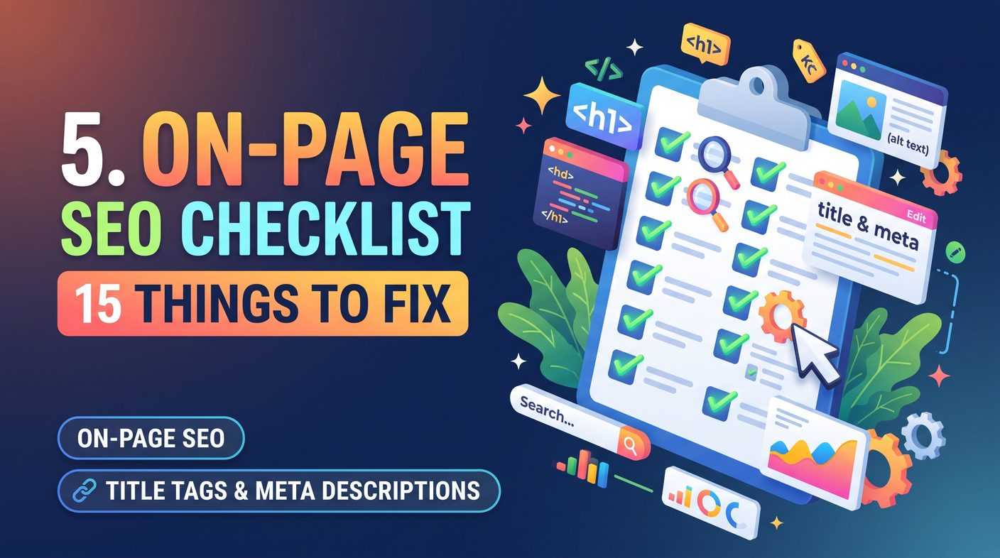

An on-page SEO checklist reviews the page-level factors search engines and visitors rely on: title tag, meta description, H1 and subheadings, search intent, content quality, URL, internal links, images, speed, mobile usability, structured data and indexing. Fix blocking issues such as noindex or wrong canonicals first, then content and links, then performance and markup.
What is on-page SEO?
On-page SEO is the process of optimising individual website pages so search engines can understand their content and users can find useful information easily. It covers visible content, HTML elements, internal links, images and other page-level factors.
Unlike off-page SEO, which includes earning backlinks from other websites, on-page SEO focuses on elements you can improve directly on your own site. Our on-page SEO service shows how page-level optimisation supports your wider search strategy, and off-page SEO covers the authority side.
On-page SEO checklist: 15 essential things to fix
1. Optimise the title tag
The title tag helps search engines understand a page's subject and can appear as the clickable headline in search results. Write a unique, descriptive title that accurately reflects the page and gives searchers a reason to click.
Place the main topic naturally in the title, preferably near the start when it reads well. Avoid repeating keywords or making misleading claims.
Example: for a page about website design services, a relevant title could be "Website Design Services in Sri Lanka | Your Brand".
Google may generate a different search-result title based on the page and query, so your exact title tag is not guaranteed to appear.
2. Write a useful meta description
A meta description summarises a page and may be used as the snippet below the title. It is not a direct Google ranking factor, but a useful description helps searchers see why the page is relevant.
Write a concise, unique description that explains what visitors will find. Include the topic naturally and avoid keyword stuffing or promises the page cannot keep.
Read our detailed title tags and meta descriptions guide for more examples and advice.
3. Use one clear, relevant H1 heading
The H1 should state the main topic of the page. It should align with the page title and with what visitors expect to find.
An article targeting "on-page SEO checklist" could use the H1 "On-Page SEO Checklist: 15 Things to Fix on Every Page".
Keep a logical heading structure throughout. HTML permits more than one H1, but a single clear primary heading is easier for readers and editors to manage.
4. Structure content with descriptive subheadings
Organise content with meaningful H2 and H3 headings. H2s introduce major sections and H3s divide those sections into specific topics.
A good heading structure helps readers scan, find answers quickly and see how the information fits together. Include relevant terms where they fit, but never force keywords into every heading.
5. Match search intent
Search intent is the reason behind a query. Someone searching "what is on-page SEO" probably wants an explanation, while someone searching "on-page SEO services Sri Lanka" is probably looking for a provider.
Review the results for your target keyword to see what type of content users expect, then build a page that satisfies that need more clearly than a generic overview. Our search intent guide and keyword research guide explain how to judge intent.
Avoid targeting several unrelated intents on one page just to fit in more keywords.
6. Improve content quality and usefulness
Your content should answer the reader's questions accurately, give relevant detail and help them take the next step. Avoid thin content written only to target a keyword, and pages that repeat the same information without adding value.
Use practical examples, original observations, trustworthy evidence and clear explanations. For business sites, describe services honestly and give customers what they need to compare options. A planned SEO content strategy keeps this consistent across the site.
No universal word count guarantees a ranking. Write enough to fulfil the page's purpose instead of padding to reach a target length.
7. Place the main keyword naturally
Identify the page's primary topic and use language that makes it clear to readers and search engines. The main keyword can appear in the title, H1, introduction and body when it fits naturally.
Include useful synonyms and related terms. Modern search systems understand related concepts, so repeating the exact phrase is unnecessary and makes the page hard to read.
8. Optimise the URL structure
Use URLs that are concise, descriptive and easy to understand, so users can tell what a page is about before they click.
Example: /on-page-seo-checklist is more descriptive than a URL made of unrelated numbers or parameters.
Separate words with hyphens and avoid needless folders or repeated keywords. If you change an existing URL, add a permanent redirect and update internal links to avoid broken pages and redirect chains.
9. Add relevant internal links
Internal links connect the pages of your website. They help visitors discover related resources and help search engines find pages and understand how they relate.
Link to relevant service pages, supporting guides and related articles using descriptive anchor text. This article, for example, links to our on-page SEO service page for readers who want professional help.
Check for important pages that receive few or no internal links. Avoid irrelevant links and avoid repeating the same exact-match anchor text. Our internal linking guide shows how to plan and audit them.
10. Fix broken links and redirect problems
Broken internal links frustrate visitors and keep them from useful content. Review your site for links to missing pages, wrong destinations and unnecessary redirect chains.
Replace broken links with relevant working URLs. If a page has moved permanently, redirect the old URL to the most relevant replacement, and do not send every removed page to the homepage when a better destination exists. Our technical SEO audit checklist covers redirects in more depth.
11. Optimise images and add appropriate alt text
Large image files slow pages down. Resize images to their display size and use efficient formats such as WebP or AVIF where supported.
Write descriptive alt text for informative images so their purpose is available to users of assistive technology. Decorative images can use an empty alt attribute. Do not stuff keywords into image descriptions.
Use descriptive filenames where practical and make sure important images can be discovered and displayed correctly.
12. Improve page speed and Core Web Vitals
Slow pages make a website harder to use. Review loading, responsiveness and layout stability, especially on mobile devices and slower connections.
Google's Core Web Vitals are:
- Largest Contentful Paint (LCP): measures loading performance. A good result is 2.5 seconds or less.
- Interaction to Next Paint (INP): measures responsiveness. A good result is 200 milliseconds or less.
- Cumulative Layout Shift (CLS): measures visual stability. A good result is 0.1 or less.
These thresholds are assessed at the 75th percentile of page visits. Use Google PageSpeed Insights and real-user data where available to find issues. Common fixes include optimising images, reducing unnecessary JavaScript, improving server response time and reserving space for images and adverts. See our Core Web Vitals guide for the details.
Good Core Web Vitals support a better experience, but meeting the thresholds does not guarantee higher rankings.
13. Make the page mobile-friendly
Your content should work well on phones, tablets and desktops. Check that text is readable, navigation is usable, buttons are easy to tap and nothing overflows the screen.
Use a responsive layout, set the viewport correctly and test key interactions on real devices. Pay particular attention to forms, menus, product information and checkout.
For Sri Lankan businesses serving customers on mobile connections, a lightweight, usable mobile experience matters even more.
14. Implement relevant structured data
Structured data gives search engines extra information about eligible content in a standard format such as JSON-LD. Depending on the page, suitable types include Article, BreadcrumbList, Product or Organization.
Choose a schema type that accurately describes the page and follow Google's documentation. Make sure the markup matches the visible content and is never misleading. Our schema markup guide explains which types are worth the effort.
Valid structured data can make a page eligible for certain search enhancements, but it does not guarantee they will appear. Avoid adding irrelevant schema just to have more markup.
15. Check indexing, canonical tags and page accessibility
A page must be accessible to search engines if you want it to appear in organic results. Check that important pages return the correct HTTP status, are not blocked by robots.txt and do not carry an accidental noindex directive.
Review canonical tags so they identify the preferred URL when duplicate or near-duplicate versions exist. Confirm internal links point to the intended canonical URLs and that important content is available in the rendered page.
Use the URL Inspection tool in Google Search Console to investigate indexing issues. A sitemap helps Google discover URLs, but submitting a URL does not guarantee indexing.
How to prioritise your on-page SEO fixes
You do not have to fix everything at once. Prioritise by potential impact, the importance of the affected pages and the effort required.
- First: resolve accidental noindex directives, blocked pages, incorrect canonical tags and important broken URLs.
- Second: improve title tags, headings, search-intent alignment and content that fails to meet user needs.
- Third: strengthen internal linking and fix broken navigation paths.
- Fourth: improve mobile usability, page performance and image delivery.
- Finally: validate structured data, refine descriptions and monitor results.
This order is a practical starting point, not a universal rule. A page with serious usability or content problems may need a different priority.
Recommended tools for an on-page SEO audit
- Google Search Console: review search performance, indexing reports and URL inspection results.
- Google PageSpeed Insights: investigate page performance and Core Web Vitals data.
- Google Rich Results Test: check structured data for supported search enhancements.
- Screaming Frog SEO Spider: crawl a site to find issues with titles, headings, links, status codes and directives.
- Browser developer tools: inspect page structure, mobile layouts, network requests and technical problems.
Use the tools that suit your site's size and complexity. Automated reports flag potential issues, but review each finding before you change anything. If you would rather have the whole site reviewed, see our SEO audits.
On-page SEO checklist: quick review
- Every important page has a descriptive, relevant title tag.
- Meta descriptions accurately summarise page content.
- The main heading clearly identifies the page's topic.
- Subheadings organise content logically.
- The page satisfies its target search intent.
- Content is accurate, useful and sufficiently comprehensive.
- Keywords and related terms are used naturally.
- URLs are descriptive and resolve correctly.
- Internal links connect related pages.
- Broken links and redirect chains are addressed.
- Images are optimised and have appropriate alt attributes.
- Page speed and Core Web Vitals have been reviewed.
- The page works well on mobile devices.
- Relevant structured data is valid and accurate.
- Indexing directives, canonical tags and HTTP responses are correct.
Conclusion
On-page SEO is an ongoing process of making pages clearer, more useful, more accessible and easier for search engines to understand. Working through these 15 checks shows you practical improvements to content, metadata, links, performance, mobile usability and indexing.
Start with your most important service pages and the pages that already earn organic impressions. Make improvements, monitor results in Google Search Console and keep refining based on evidence, not assumptions. You can see what that looks like in practice in our SEO case studies.
If you want professional help identifying and prioritising optimisation issues, explore our on-page SEO services or talk to an SEO specialist in Sri Lanka. You can also read our title tags and meta descriptions guide for a closer look at two essential page elements.